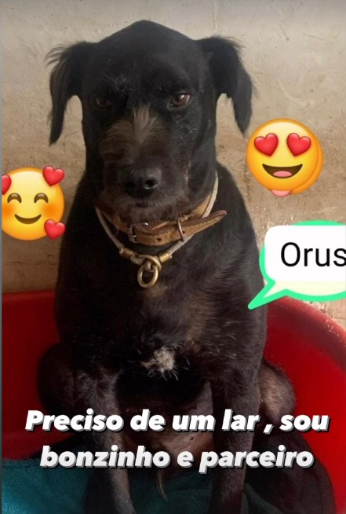
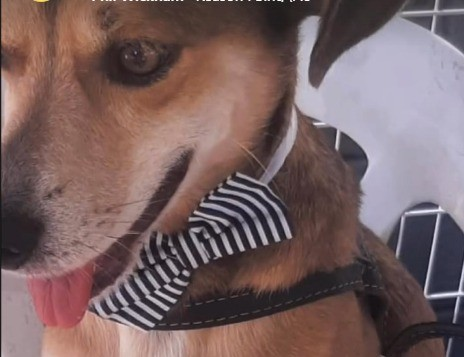
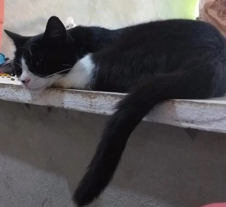

BILLY
Idade: 12 anos
O billy é um cachorro de porte pequeno, dócil e bastante sociável. Já está castrado...
Aqui você encontra histórias de esperança e novos começos. Cada animal disponível passou por resgate, recebeu cuidados e hoje está pronto para encontrar uma família especial.
Idade: 12 anos
O billy é um cachorro de porte pequeno, dócil e bastante sociável. Já está castrado...

Idade: 6 anos
Orus é um cachorro de porte médio...

Idade: 3 anos
Chimbinha é um cachorro de porte pequeno...

Idade: 5 anos
Tininha é uma gatinha guerreira...